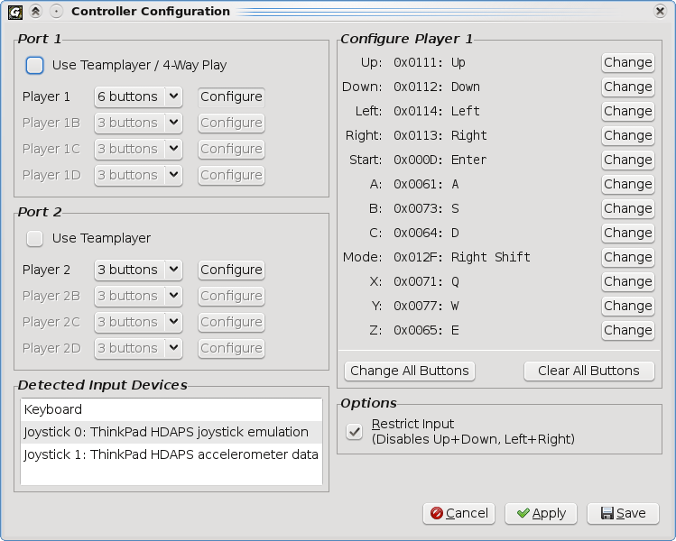

The Controller Configuration window allows you to remap controllers.
To remap a controller's key configuration, click the "Configure" button next to that controller's definition. The current configuration will be displayed in the "Configure Player X" box. You can change a single button by clicking the "Change" button for that button, or you can change the entire configuration by clicking "Change All Buttons". Note that Gens/GS will respond to joystick input as well as keyboard input.
Use Teamplayer / 4-Way Play: If this option is
enabled, a virtual Sega Teamplayer multitap is connected to the specified port.
This allows up to 4 controllers to be plugged in at once. Each controller can
be configured by using the "Configure" buttons.
Games that support 8 players are supported by enabling the Sega Teamplayer on
both controller ports.
To use 4-Way Play, enable the Teamplayer option for Port 1 only. Gens/GS will
automatically detect that the game uses the 4-Way Play adapter instead of the
Sega Teamplayer adapter, and will adjust emulation parameters to support the game.
Detected Input Devices: This lists all detected input devices. If Gens/GS is not responding to input from a controller, make sure that the controller is listed here.
Change All Buttons: This allows you to change all of the buttons for a controller at once, instead of having to click the "Change" button for each button on the controller.
Clear All Buttons: This will clear all buttons for the current controller, effectively making the controller unusable until it is reconfigured.
Restrict Input: If this is enabled, you will not be able to press Up and Down or Left and Right at the same time. This is similar to how the original controllers function. Some games exhibit weird behavior if opposite directions are pressed at the same time, which is why this option is enabled by default.